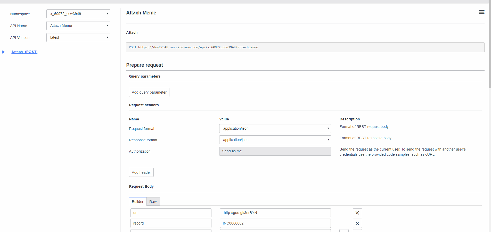

As a new developer, working on the platform for about 5 months, these are some of the thoughts I have on the front-end development for ServiceNow. This post is targeted towards people that have just gone through ServiceNow’s Learning Plan, started getting used to the platform, or just generally curious on how ServiceNow approaches interfaces/design. Veterans are more than welcome to expand on ideas that are going to be listed here and give any helpful insight.
For an application that is consumed by an end user, the best practice is to create a separation between front-end design and back-end logic - this is known as the MVC pattern. It keeps projects clean and priorities focused. Within ServiceNow, it’s initially hard to see that division. You can go to the platform’s browser IDE, Studio, and look through your application to see the various sections in the Application Explorer. You have tabs like Forms & UI that lets you customize your forms and how your lists are presented, but they sit next to things like business logic scripts. It’s all encompassing and from the initial pass through, the application feels complete. Eventually it gets added as another module on the list of applications on the main browser.

…But is it done? It isn’t some sort of JSON being displayed on a command window but it is bare in aesthetics. What if you want a more engaging interface for your users? The list views are practical but ask any front-end developer (or end-user, for that matter) and they’ll immediately ask for alternatives. With over a decade worth of feedback and upgrades, ServiceNow has created other options for developers to make their instances or applications visually appealing. Its interesting to see how much it’s progressed and explore what these options are.
The Angular2/4 Experiment
Angular 4, formerly Angular 2, is the newest version of the popular AngularJS front-end framework led by the Angular Team at Google. For new projects that are not weighed down by legacy projects or pre-existing requirements, it’s great to use a newer version of a tool. Pair Angular 2/4 up with angular-cli and you have a great system of generating files, testing, and managing front-end development. That said, it’s a shame ServiceNow does not currently support it (Jakarta). If developers do want to pursue this route, it would most likely be a stand-alone front-end app that would use ServiceNow as their back-end. It would save a lot of headache just waiting for ServiceNow to support it, but it is feasible. Check out Nathan Grove’s Angular 2 set-up and the workshop he led on a sample Angular2 App:
Angular2 Development Environment Angular2 applications for the ServiceNow platform
 The application is a little silly, but does illustrate the point he’s trying to make. Here, from the REST API Explorer, we can update a record. Navigating to the record, we can see the changes that have been applied.
 Extending further pass the REST API test, we can actually use Nathan Grove’s application to create an image, list all the records of specific table, and even attach the image onto it.
Extending further pass the REST API test, we can actually use Nathan Grove’s application to create an image, list all the records of specific table, and even attach the image onto it.
It seems to defeat the purpose of building something outside of ServiceNow and miss out in features built into the platform, but there is merit in having loosely coupled applications. It would be simple enough for you to move from ServiceNow and attach this onto some other framework if you needed to. If we want to stay on the platform, however, we could jump back to what ServiceNow currently supports: AngularJS.
The AngularJS Application
If you’ve gone through the Learning Plan, you should have run through the “Introduction to AngularJS in ServiceNow”. If not, I highly recommend going through “New to ServiceNow” Learning Plan if you’re interested in the platform or studying for the certification exams. Here’s the quick recap:
- Create UI Pages for your application
- Within the Jelly Template, insert a script source to AngularJS
- Write your AngularJS logic
- Application data can be accessed and UI Scripts can be used to create functional front-end
- Styling and Bootstrap can be added to enhance the design
The Jelly Script tags along with the AngularJS script and bootstrap link can be seen here.
Client script logic can be utilized through UI Scripts.
 This simple example here does illustrate some of the nice features, such as two-way data-binding and customized HTML/CSS.
This simple example here does illustrate some of the nice features, such as two-way data-binding and customized HTML/CSS.
It’s pretty concise and gives you the basic elements you need to get your application looking nice. However, there are some inherent problems that arise as you scale up your project. You have various references on the UI Page of UI Scripts for Client side scripting, Script Includes/Processing Script for Server side scripting, and CSS styling as well. When you move up and view from the top-down, page navigation gets awkward with endpoints like ‘x_1010_app.do’. This seems like it should be separated from your base application and unified through a manager. So what is the alternative?
The Content Management System
Now it looks more like a consumer site!
The CMS has been around for years, predating the four most recent releases out today. If you understand Jelly Script and/or have a complex service catalog, this might be the choice for you. As a plugin, it creates a ServiceNow application that creates custom interfaces for the ServiceNow platform and other applications. When you want to create a new site within your instance, you can create a new Content Site. This encompasses all the various components where you can customize the HTML, CSS, layout, and more. To access tables and persist data, Developers can access their ServiceNow data through Jelly Scripts to retrieve it and iframes display it. In the sense of the high-level overview, the CMS does achieve the same thing as our previous AngularJS app, but it’s different in its packaging. The basic structure is:
- Content Site
- Content Type: Defines how the data is pull from a particular database table and rendered within the site
- Content Page: Displays blocks of content
- Layout: User Interface macro that defines a HTML structure
- Dropzone: Define where the content blocks are placed to make up the page
- Content Block: Chunks of HTML that make-up a page, the output is HTML
- Theme
- CSS
The front-end design here is bundled together. Compare that to the multiple UI pages and UI Scripts, it’s good to see a contained, pre-defined hierarchy that we can play around with. While this does seem intuitive, I recommend not focusing on this method too much and trying the next one, for reasons discussed later.
The Service Portal
The Service Portal allows for further customizations that are not available on the Content Management System.
The Service Portal seems to be the standard when attempting to create a better user experience on ServiceNow. It utilizes AngularJS and acts more as a visual layer that sits on top of ServiceNow. Much like a Content Site for the CMS, the Service Portal has ‘Portals’ to the site you want to redirect your users to. From the newly created portal record, you can set things like the URL suffix, the default homepage, the 404 page, and much more. It also includes great additions like global CSS variables, menu set-up, and a Theme for the entire portal.
Looks very similar to that of the CMS main window.
From here, pages can be created and linked to the portal itself. Within those pages are the most interesting part of the Service Portal: widgets. These act as self-contained HTML, CSS, Client script, and Server script blocks that can be arranged and reused on portal pages.
Everything you need to develop a widget; easily accessible, side-by-side.
The TechNow talks are great places to start if you want to go this route.
This seems eerily familiar to the CMS, so why choose one over the other?
CMS vs Service Portal
You can see forums on this topic that are fairly recent. Service Portal, in a developer perspective, is simply easier to use. CMS and Service Portal are separate entities. While CMS is prone to having update conflicts, Service Portal is a self-enclosed application independent from any new versions that get released. Another point for Service Portal is the lack of Jelly Script and iframes. Jelly Script is not widely popular and makes it difficult to find proper/helpful documentation. With iframes, they are difficult to style and would be susceptible to upgrade issues. Service Portal uses AngularJS, a popular framework, and being just a visual layer allows for a better control of the page design. However, there is one notable downside to the Service Portal. It only allows for one Catalog per portal out of the box, whereas the CMS iframes can handle the need for complex catalogs. Multiple Catalog references can be achieved on a Service Portal, but it requires various widget communication and complexity that can be a hassle.
For a more thorough discussion on this topic, check out Goran Lundqvist and Brad Tilton’s thoughts on the matter:
Up Next?
It’s short-sighted to say that these will be the only options available for ServiceNow. The company aims to do two major releases a year and is steadily growing. With more developers coming on board to build on the platform, the company will be more than likely to accommodate them with the most practical and widely used frameworks/tools. So while Angular 4 is not currently available, we might see it in the near future along with React, Redux, and many others.